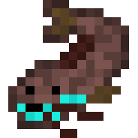
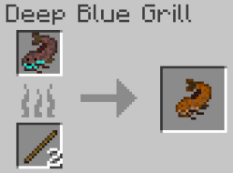
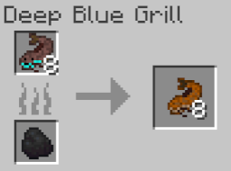
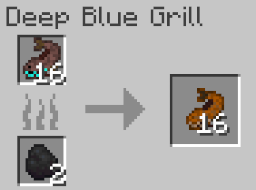
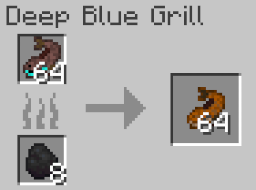
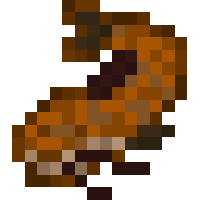

Catfish
The catfish is an uncommon fresh/brackish water fish that can be used as a source of food or be kept as a pet by the
player. It is passive towards the player and can drop items such as bone meal or raw catfish.
Spawning
Catfish are uncommon solitary fish that spawn exclusively in river and mangrove swamp biomes. The way catfish spawn is by replacing some naturally spawning aquatic mob. In mangrove swamps, each tropical fish has a chance to be replaced by a catfish. In rivers, each salmon has a chance to be replaced instead. The table below shows the spawn rates of the catfish in the biomes it spawns in.
| Biome | Spawn Chance (Replacement Chance) | Group Size |
|---|---|---|
| River | 15% (Salmon) | 1 |
| Mangrove Swamp | 20% (Tropical Fish) | 1 |
Items
Item drop chances
The catfish can drop 2 items, bone meal or raw catfish. Upon death, it will always drop 1 raw catfish (only if the player kills it). Similarly, the catfish will only drop 1-2 bone meal (equal chance for both) if the player kills it. Below is a table that shows the item drop chances.
| Item | Chance (If killed by player) | Count |
|---|---|---|
| Raw Catfish | 100% | 1 |
| Bone meal |
50% 50% |
1 2 |
Raw Catfish

Raw catfish is an item that is exclusively dropped by the catfish mob, stackable up to 64 in one item slot. It has a 100% chance to be dropped by the catfish if the player kills it. Below are the food stats of the raw catfish:
- Nutrition: 2
- Saturation: 0.4
Cooking
The raw catfish can only be cooked using the Deep Blue Grill. Like every other mob food item in Blue Depths, you can only cook the catfish as 1, 8, 16, or 64 using either sticks (only if you want to cook one), coal, or charcoal as fuel. Below are images showing how to cook the various counts of catfish:




Cooked Catfish

Cooked Catfish can be obtained when a player cooks Raw Catfish in the Deep Blue Grill. It is used as new source of food for the player, stackable up to 64 in one item slot. Below are the food stats of the cooked catfish:
- Nutrition: 6
- Saturation: 8
Behavior
Catfish are passive mobs, meaning they do not attack the player. They are bottom dwellers, meaning that they tend to stay at the bottom of the river or mangrove swamps. However, at night time, they become much more active.
Obtaining Catfish
Bucket of Catfish
Because of their size they can actually be kept as pets and transported via water buckets. The player only needs to use a bucket of water near the catfish to scoop it up, replacing their water bucket with a bucket of catfish. Like with vanilla Minecraft mobs, right clicking the ground with the bucket of catfish will place water and the catfish, giving the player an empty bucket. When a catfish is placed down via the bucket, they won't despawn, unlike wild catfish who will despawn when the player leaves the area.
History
Development History
| Datapack Version | Addition/Change |
|---|---|
| 1.0.0 (Initial Release) |
|
| 1.0.1 | Buffed spawn rate by 33.3%. |
| 1.0.2 | Fixed a bug where the catfish will sometimes jump out of the water and move around on land. |
| 1.1.0 (Roaring Rivers Part 1: Below the Surface) |
|
Gallery